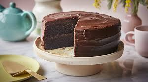

Chocolate Cake

A rich, moist, and decadent chocolate cake, perfect for all occasions.
To make Hershey's classic chocolate cake, start by mixing the dry ingredients, then add the wet ingredients and beat the batter for about three minutes.
Stir in boiling water by hand, pour the batter into two greased round pans, and bake in a preheated oven until a toothpick comes out clean. Let the cakes
cool slightly before removing them from the pans.
While the cake cools, prepare the frosting by creaming butter, then gradually adding cocoa, confectioners' sugar, milk, and vanilla until the mixture is
smooth and spreadable. Once the cake is completely cooled, frost and stack the layers, covering the entire cake evenly.
Ingredients
- Sugar
- Flour
- Cocoa Powder
- Leaveners
- Salt
- Eggs
- Milk
- Oil
- Vanilla
Steps -
- Preheat the oven to 350 degrees F (175 degrees C). Grease and flour two 9-inch round cake pans.
- Make cake: Stir together sugar, flour, cocoa, baking soda, baking powder, and salt in a bowl.
- Add eggs, milk, oil, and vanilla; mix for 3 minutes with an electric mixer. Stir in boiling water by hand.
- Pour evenly into the prepared pans.
- Bake in the preheated oven until a toothpick inserted into the centers comes out clean, 30 to 35 minutes.
Cool for 10 minutes before removing from pans to cool completely.
- While cakes cool, make frosting: Cream butter with an electric mixer until light and fluffy.
Stir in confectioners' sugar and cocoa alternately with milk and vanilla. Beat to a smooth spreading consistency.
- Split the layers of the cooled cake horizontally, cover the top of each layer with frosting, then stack them onto a serving plate.
- Frost the outside of the cake with remaining frosting.
- Enjoy!
Return to Top
Return to Home